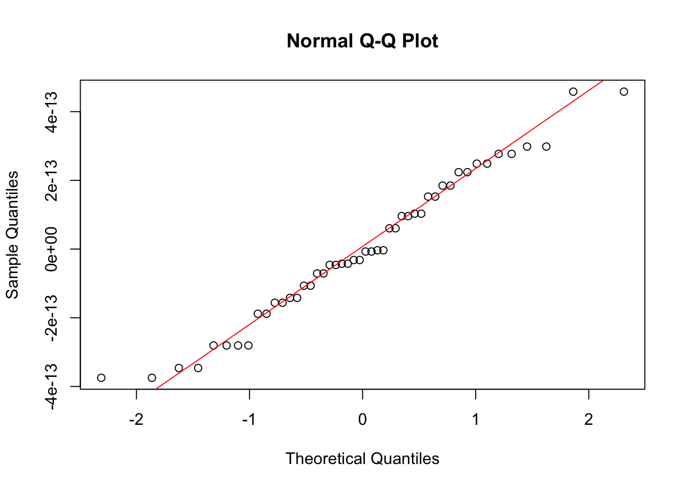
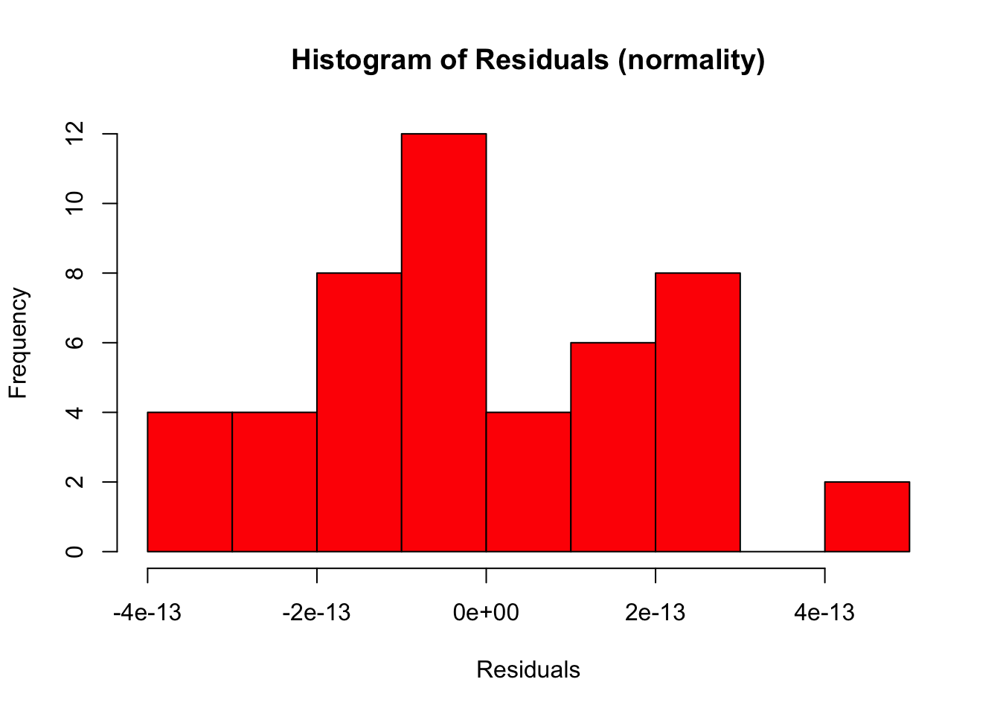
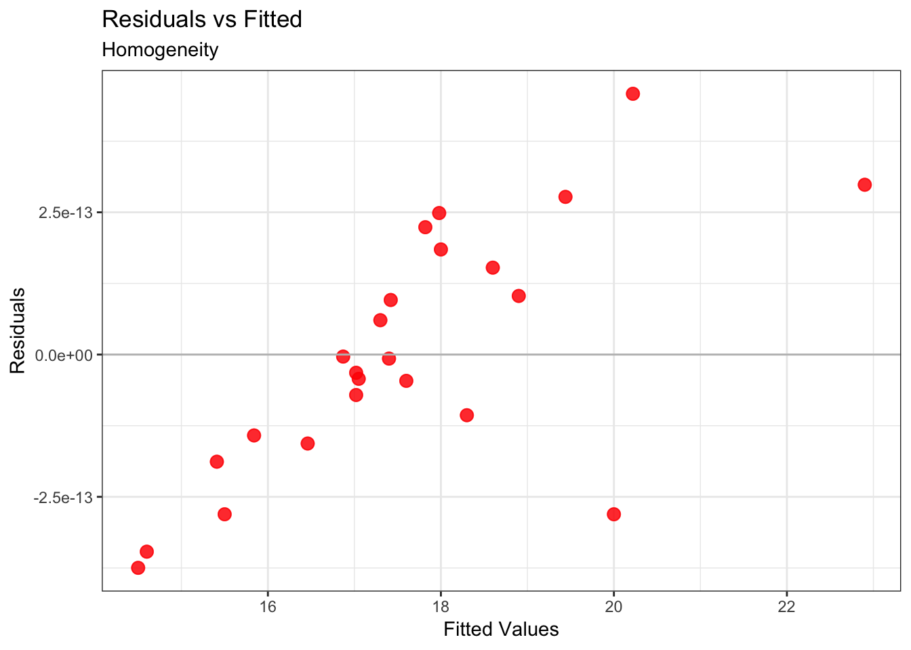
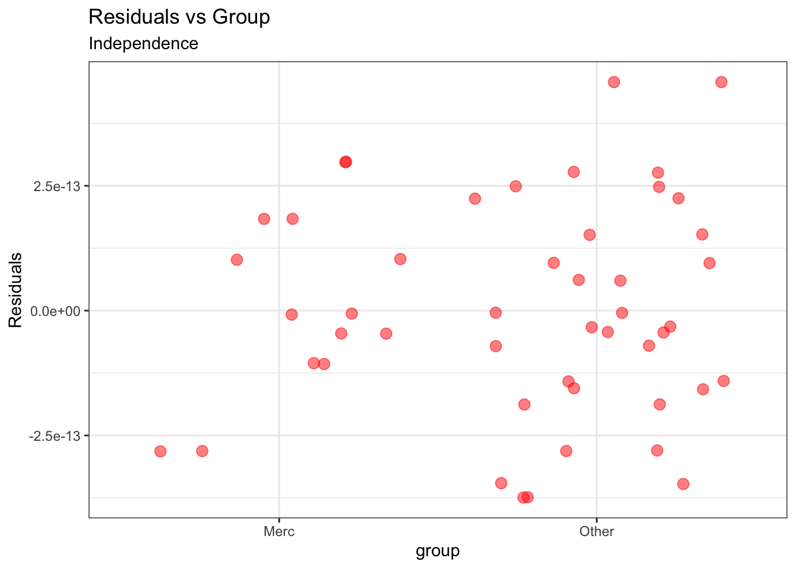
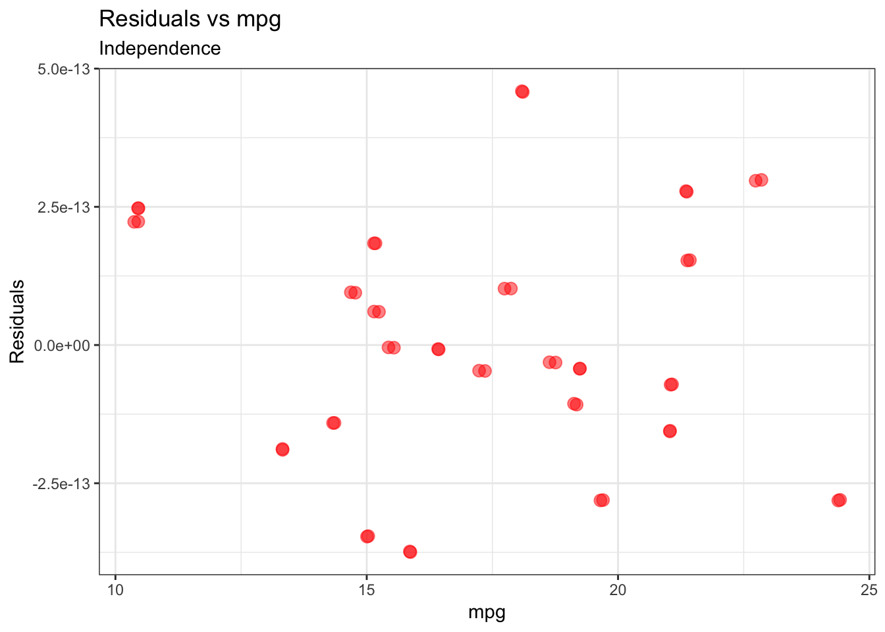
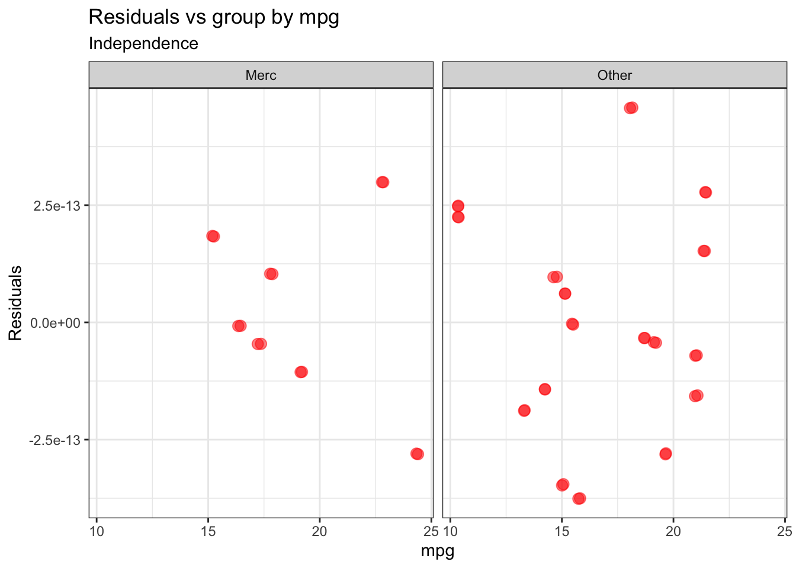

Main Analysis
Report:
Formula of the model
Fixed Effects
Random Effects. Specify varying intercept and/or slope in parentheses.
Method to compute p-values
Software, version and packages used for the analysis - such as: these analysis were carried out with R 3.5.1. The models were run using lmerTest version 3.1.2; the contrasts were calculated with the package multcomp version 1.4.8.
Describe:
Rationale of formula
Random Structure
Results
Model Comparison
If you compared more than one model, report the following results.
mod_0 <- lmer(qsec ~ mpg + (1|ID), data=dat.l)
mod_1 <- lmer(qsec ~ mpg + group + (1|ID), data=dat.l)
mod_2 <- lmer(qsec ~ mpg * group + (1|ID), data=dat.l)List the models:
mds <- ls(pattern="^mod")
list_mds <- data.frame(cbind(mds,
formula=c(paste0(formula(mds[1]))[3],
paste0(formula(mds[2]))[3],
paste0(formula(mds[3]))[3])
))
kable(list_mds)| mds | formula |
|---|---|
| mod_0 | mpg + (1 | ID) |
| mod_1 | mpg + group + (1 | ID) |
| mod_2 | mpg * group + (1 | ID) |
| model.01 | mpg + (1 | ID) |
| model.01b | mpg + group + (1 | ID) |
| model.01c | mpg * group + (1 | ID) |
| model.02 | mpg + (1 | ID) |
Report:
Method (backward elimination, forward selection)
Test
AIC
BIC
Log Likelihood
Deviance
statistic
Degrees of Freedom
P-Value
Comment on:
AIC
Deviance
P-Values
(DoF)
m.anv <- anova(mod_0,mod_1,mod_2)
m.anv <- m.anv %>%
tidy() %>%
mutate(Sign=ifelse(p.value<0.001, "**",
ifelse(p.value<0.05, "*",
ifelse(p.value < 0.1, ".", "-")))) %>%
mutate_each(funs(round(.,2)), -term, -Sign)kable(m.anv, caption = "Table 2: model comparison")| term | npar | AIC | BIC | logLik | deviance | statistic | df | p.value | Sign |
|---|---|---|---|---|---|---|---|---|---|
| mod_0 | 4 | -532.97 | -525.49 | 270.49 | -540.97 | NA | NA | NA | NA |
| mod_1 | 5 | -521.85 | -512.49 | 265.92 | -531.85 | 0.00 | 1 | 1.00 | - |
| mod_2 | 6 | -527.62 | -516.40 | 269.81 | -539.62 | 7.77 | 1 | 0.01 | * |
Fixed Effects
Report key findings in the text:
Parameter estimates, Standard Errors, Confidence Intervals (and method used to calculate them), Significance tests (Estimate = , SE = , p < )
Standard deviations and correlations of random effects
Example of description of a model, from Winter, 2013 (https://arxiv.org/pdf/1308.5499.pdf):
“We used R (R Core Team, 2012) and lme4 (Bates, Maechler & Bolker, 2012) to perform a linear mixed effects analysis of the relationship between pitch and politeness. As fixed effects, we entered politeness and gender (without interaction term) into the model. As random effects, we had intercepts for subjects and items, as well as by-subject and by-item 21 random slopes for the effect of politeness. Visual inspection of residual plots did not reveal any obvious deviations from homoscedasticity or normality. P-values were obtained by likelihood ratio tests of the full model with the effect in question against the model without the effect in question.”
# confidence intervals
set.seed(88)
ci <- confint(mod_2, method="Wald")
ci <- data.frame(ci[-c(1,2),])
ci <- ci %>% tibble::rownames_to_column("term")# estimates
est <- data.frame(summary(mod_2)$coef)
est2 <- est %>%
add_rownames("term") %>%
inner_join(ci, by="term") %>%
rename("p.value"=Pr...t..,
"st.error"=Std..Error,
"CI_2.5"=X2.5..,
"CI_97.5"=X97.5..) %>%
mutate(Sign=ifelse(p.value<0.001, "**",
ifelse(p.value<0.05, "*",
ifelse(p.value < 0.1, ".", "-"))),
group=ifelse(grepl(pattern = "Other", x = term), "Other", "Merc")) %>%
mutate_each(funs(round(.,2)), -term, -Sign, -group)kable(est2, caption = "Table 3: estimates of fixed effects and 95% confidence intervals")| term | Estimate | st.error | df | t.value | p.value | CI_2.5 | CI_97.5 | Sign | group |
|---|---|---|---|---|---|---|---|---|---|
| (Intercept) | 8.39 | 1.84 | 0.00 | 4.56 | 0.99 | 4.79 | 11.99 | - | Merc |
| mpg | 0.55 | 0.10 | 0.00 | 5.78 | 0.99 | 0.36 | 0.74 | - | Merc |
| groupOther | 6.83 | 2.22 | 0.01 | 3.08 | 0.98 | 2.48 | 11.17 | - | Other |
| mpg:groupOther | -0.44 | 0.12 | 0.01 | -3.70 | 0.96 | -0.68 | -0.21 | - | Other |
For example, you would report the effect of mpg in the text: “we found no significant main effect of mpg (beta = 0.55, SE = 0.10, CI 95% = 0.36 - 0.74, p-value = 0.99)”. Same for the other effects and the interaction.
plt <- ggplot(subset(est2),
aes(x=term, y=Estimate, fill=group, shape=group, group=term)) +
geom_errorbar(aes(ymin=CI_2.5, ymax=CI_97.5), width=0.1, position = position_dodge(0.5)) +
geom_line(position = position_dodge(0.5)) +
geom_point(size=2, position = position_dodge(0.5)) +
scale_shape_manual(values = c(21,22)) +
scale_fill_manual(values=c("yellow", "blue")) +
theme(plot.subtitle = element_text(hjust=0.5), legend.position = "top",
axis.text = element_text(size = 14),
axis.title = element_text(size = 17),
legend.text = element_text(size = 14),
legend.title = element_text(size = 17),
strip.text.x = element_text(size = 15)) +
labs(y="Estimated qsec", x="", subtitle="")plt
Random Effect
You can report the Variance or Standard Deviation of the Random Effect.
re.id <- VarCorr(mod_2, digits=2)[1]$`ID` #variance
stdev.residual <- c(round(sigma(mod_2), 2)) #residual std dev
stdev.id <- round(attributes(re.id)$stddev, 2) #std dev
re <- tidy(rbind(stdev.id, stdev.residual))
colnames(re) <- c("Term", "Intercept")kable(re, caption = "Table 4: standard deviations of the random effects")| Term | Intercept |
|---|---|
| stdev.id | 1.04 |
| stdev.residual | 0.00 |
Group Comparisons
Report key findings in the text (as applicable to your specific analysis):
T-test and Anova:
Test statistics
degrees of freedom
significance tests
Example: Chi/F/T(df) = …, p </= …
Simultaneous Tests for General Linear hypotheses (contrasts):
Estimate of the test statistics
Standard error
significance test
Example: Estimate = …, SE = …, p < …
Overall difference between groups (Anova)
overall.anv <- Anova(mod_2, contrasts=list(topic=contr.sum, sys=contr.sum), type=3) %>%
tidy() %>%
mutate(Sign=ifelse(p.value<0.001, "**",
ifelse(p.value<0.05, "*",
ifelse(p.value < 0.1, ".", "-")))) %>%
rename("Chisq"=statistic) %>%
mutate_each(funs(round(.,2)), -term, -Sign)kable(overall.anv, caption="Table 5 : overall difference between groups")| term | Chisq | df | p.value | Sign |
|---|---|---|---|---|
| (Intercept) | 20.83 | 1 | 0 | ** |
| mpg | 33.37 | 1 | 0 | ** |
| group | 9.49 | 1 | 0 | * |
| mpg:group | 13.67 | 1 | 0 | ** |
For example, you would say in the text: “the analysis of variance of type III revealed a significant difference between the groups (Chisq(1) = 9.49, p-value<0.001), with the group Oter scoring higher than the Merc group (beta= 6.83, SE = 2.22; see Table 3)”
Simultaneous Tests for General Linear hypotheses between groups and age classes (Contrasts)
group <- paste0(dat.l$mpg, dat.l$group)
group <- aggregate(model.matrix(mod_2) ~ group, FUN=mean)
rownames(group) <- group$group
(group <- group[,-1])## (Intercept) mpg groupOther
## 10.4Other 1 10.4 1
## 13.3Other 1 13.3 1
## 14.3Other 1 14.3 1
## 14.7Other 1 14.7 1
## 15.2Merc 1 15.2 0
## 15.2Other 1 15.2 1
## 15.5Other 1 15.5 1
## 15.8Other 1 15.8 1
## 15Other 1 15.0 1
## 16.4Merc 1 16.4 0
## 17.3Merc 1 17.3 0
## 17.8Merc 1 17.8 0
## 18.1Other 1 18.1 1
## 18.7Other 1 18.7 1
## 19.2Merc 1 19.2 0
## 19.2Other 1 19.2 1
## 19.7Other 1 19.7 1
## 21.4Other 1 21.4 1
## 21Other 1 21.0 1
## 22.8Merc 1 22.8 0
## 24.4Merc 1 24.4 0
## mpg:groupOther
## 10.4Other 10.4
## 13.3Other 13.3
## 14.3Other 14.3
## 14.7Other 14.7
## 15.2Merc 0.0
## 15.2Other 15.2
## 15.5Other 15.5
## 15.8Other 15.8
## 15Other 15.0
## 16.4Merc 0.0
## 17.3Merc 0.0
## 17.8Merc 0.0
## 18.1Other 18.1
## 18.7Other 18.7
## 19.2Merc 0.0
## 19.2Other 19.2
## 19.7Other 19.7
## 21.4Other 21.4
## 21Other 21.0
## 22.8Merc 0.0
## 24.4Merc 0.0Here I run only 1 contrast as an example between cars of group Other with mpg=10/40 and cars of group Merc with mpg=16.4.
contrasts <- rbind(
group["10.4Other",] - group["16.4Merc",]
)# Transform into Matrix
contrast.matrix <- rbind("mpg 10-16 Other vs Merc"=as.numeric(contrasts[1,]))
comparisons <- summary(glht(mod_2, contrast.matrix))
contrasts <- tidy(comparisons) %>%
rename("term"=lhs) %>%
mutate(Sign=ifelse(p.value<0.001, "**",
ifelse(p.value<0.05, "*",
ifelse(p.value < 0.1, ".", "-")))) %>%
mutate_each(funs(round(.,2)), -term, -Sign)kable(contrasts[,-2], caption="Table 6: linear contrasts by group and age class")| term | estimate | std.error | statistic | p.value | Sign |
|---|---|---|---|---|---|
| mpg 10-16 Other vs Merc | -1.09 | 0.69 | -1.56 | 0.12 | - |
Example write-up: “the qsec of cars of group Other with mpg=10/40 and cars of group Merc with mpg=16.4 did not significantly differ between each other (Estimate = -1.09, SE = 0.69, p-value = 0.12)”
Individual Variation
(Without Example)
Report:
Model formula
Method to calculate individual coefficients/individual effect sizes (note, unrelated to model effect size!)
Effect sizes of key findings
Correlations:
Method
Correlation coefficients
Model Diagnostic
- Normal Quantile-Quantile (QQ) Plot (normality)
The QQNorm plot shows theoretical and sample data extracted from the observed values (representative of quantiles) and aims to demonstrate that the data fits the normal distribution:
qqnorm(resid(mod_2)) ; qqline(resid(mod_2), col="red")
Another important diagnostic plot is the Residual Plot. Residuals are “the difference between the observed value and the estimated value of the quantity of interest (for example, a sample mean)” (from wikipedia). In the case of a regression, residuals represent the distance between the depedent variable (Reaction) and its estimates worked out by the regression function (the so-called fitted values). Plotting the residuals can demonstrate that various important assumptions are respected:
- Histogram of the residuals (normality of the residuals)
See the shape, is it normally distributed?
hist(resid(mod_2), main = "Histogram of Residuals (normality)",
xlab = "Residuals", col = "red")
- Residual Plot (homogeneity)
Data points should not be dispersed. We might spot some outliers.
ggplot(data = dat.l, aes(x = predict(mod_2), y = cbind(resid(mod_2)))) +
geom_point(size = 3, col = "red", alpha = 0.6) +
geom_abline(slope = 0,
intercept = 0,
col = "gray") +
labs(x = "Fitted Values", y = "Residuals",
title = "Residuals vs Fitted",
subtitle = "Homogeneity")
- Plot of the residuals vs the independent variables (independence)
ggplot(data = dat.l, aes(x = group, y = cbind(resid(mod_2)))) +
geom_jitter(size = 3, col = "red", alpha = 0.5) +
labs(y = "Residuals", title = "Residuals vs Group", subtitle = "Independence") 
ggplot(data = dat.l, aes(x = mpg, y = cbind(resid(mod_2)))) +
geom_jitter(size = 3, col = "red", alpha = 0.5) +
labs(y = "Residuals", title = "Residuals vs mpg", subtitle = "Independence") 
ggplot(data = dat.l, aes(x = mpg, y = cbind(resid(mod_2)))) +
geom_jitter(size = 3, col = "red", alpha = 0.5) +
facet_wrap(~group) +
labs(y = "Residuals", title = "Residuals vs group by mpg", subtitle = "Independence") 